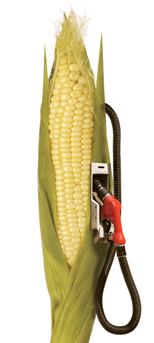

Module 6—Petrochemicals
 Reflect and Connect
Reflect and Connect

© James Steidl/shutterstock
Ethanol is being championed around the world as a great fuel additive for blending with gasoline. One day, ethanol might even be a substitute for gasoline. Ethanol is environmentally sound because it can be made through yeast fermentation from renewable resources such as corn, sugar cane, and switch grass.
It may seem ideal to use a renewable resource to make ethanol; however, there are concerns about how much land the process requires. Some people argue that the land used to grow the plants for ethanol production could be used to grow food for the world’s hungry.
A greener option for ethanol production may be to use waste products. Research is being done to find a way to use agricultural waste (such as straw) or pulp and paper waste (such as wood chips) for ethanol production. This would resolve the land-use concern and would make use of an otherwise unused waste product.